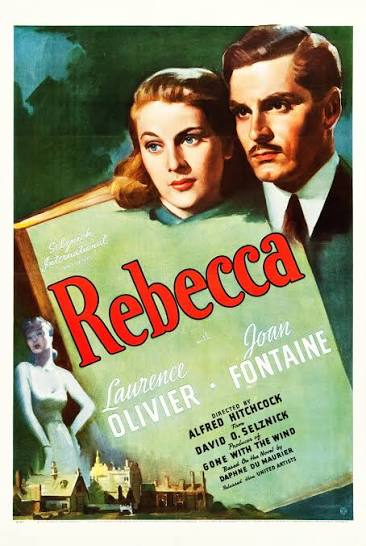
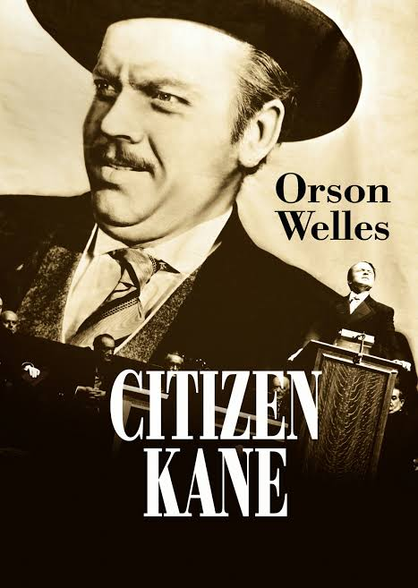
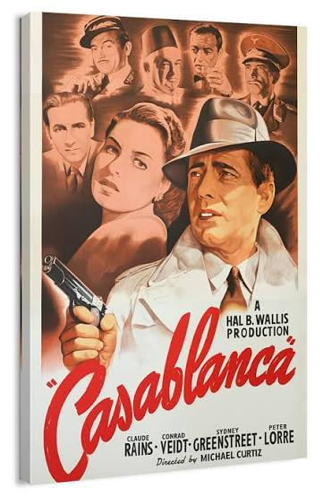
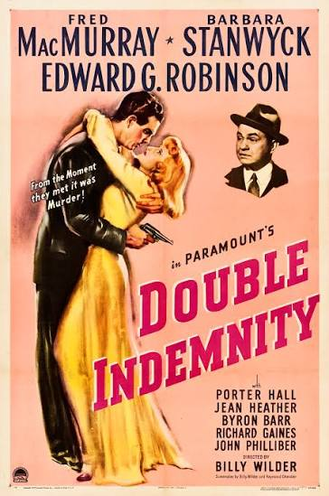
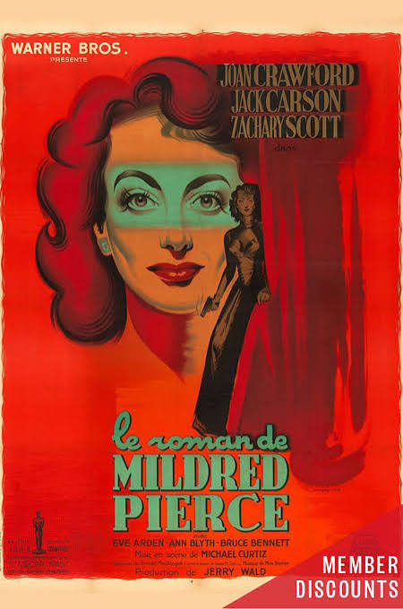
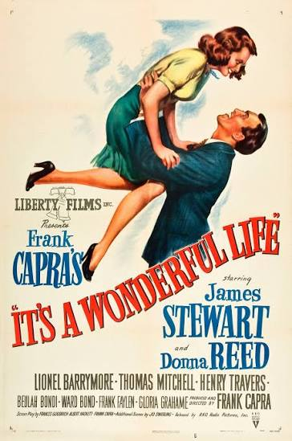
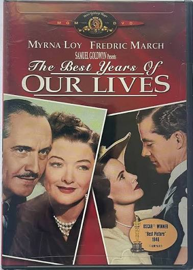
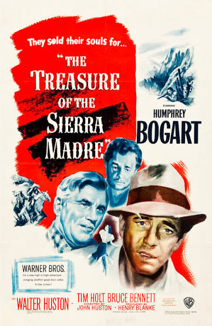
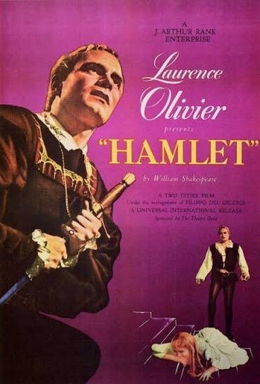
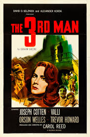

LA EDAD DE ORO DEL CINE
Las Grandes Películas de los Años 40
La década de 1940 fue una época fundamental para
el cine. El cine negro, el suspense, los dramas
románticos y las historias relacionadas con la
Segunda Guerra Mundial dejaron películas que
todavía influyen en el cine actual.
10 películas imprescindibles
Descubre diez grandes clásicos de los años 40.
Cada tarjeta incluye el póster de la película,
su año de estreno, género y una breve explicación
de su importancia en la historia del cine.

1940
Rebecca
Suspenso / Drama
“Last night I dreamt I went to Manderley again…”
Historia de una joven que se casa con un viudo fascinante, solo para descubrir que debe vivir a la sombra de su exesposa, Rebecca, quien murió misteriosamente años atrás. La joven esposa debe enfrentarse al terrible secreto de su apuesto y frío esposo, Max De Winter. También debe lidiar con la celosa y obsesionada señora Danvers, el ama de llaves, quien se niega a aceptarla como la dueña de la casa.

1941
Citizen Kane
Drama / Misterio
SOMEONE CALLED HIM A HERO OTHER CALLED HIM A HEEL
El magnate periodístico Charles Foster Kane fue separado de su madre cuando era niño y puesto bajo la tutela de un rico industrial. Como consecuencia, cada acción que emprende a lo largo de su vida, ya sea bienintencionada, tiránica o autodestructiva, parece ser, de alguna manera, una reacción a aquel suceso profundamente traumático.

1942
Casablanca
Romance / Drama
Rick debe decidir entre recuperar un amor
del pasado o ayudar a dos fugitivos a escapar
durante la guerra. Ganó el Óscar a mejor
película y se convirtió en un clásico.

1944
Double Indemnity
Cine negro / Suspenso
Un agente de seguros se involucra en un
plan para cometer un asesinato. Destaca
por su intriga, sus personajes ambiguos
y su influencia en el cine negro.

1945
Mildred Pierce
Drama / Cine negro
Una madre trabaja para ofrecerle una vida
mejor a su hija, pero sus sacrificios
provocan conflictos familiares. Joan Crawford
ganó el Óscar a mejor actriz.

1946
It's a Wonderful Life
Drama / Fantasía
Un hombre atraviesa una crisis y descubre
cuánto ha significado su vida para los demás.
Con el tiempo, esta obra de Frank Capra se
convirtió en un clásico navideño.

1946
The Best Years of Our Lives
Drama / Posguerra
Tres veteranos regresan a casa después
de la Segunda Guerra Mundial y afrontan
dificultades para adaptarse a la vida civil.
Ganó el Óscar a mejor película.

1948
The Treasure of the Sierra Madre
Aventura / Drama
Tres hombres buscan oro en México, pero
la ambición y la desconfianza amenazan
con destruir su alianza. Humphrey Bogart
protagoniza esta historia de codicia.

1948
Hamlet
Drama / Tragedia
Laurence Olivier adapta la obra de
Shakespeare sobre un príncipe que busca
descubrir la verdad detrás de la muerte
de su padre. Ganó el Óscar a mejor película.

1949
The Third Man
Misterio / Cine negro
Un escritor llega a la Viena de posguerra
para investigar la muerte de un amigo.
La fotografía, la música y la atmósfera
la convirtieron en un clásico del suspense.
Ganadoras del Óscar a Mejor Película
Esta lista corresponde a las películas ganadoras
estrenadas entre 1940 y 1949. El año indicado es
el de estreno de cada película; la ceremonia de
los Óscar se celebró normalmente al año siguiente.
-
1940
Rebecca
Drama de suspenso dirigido por Alfred
Hitchcock. Ganó el Óscar correspondiente
a la temporada de 1940.
-
1941
How Green Was My Valley
Drama sobre una familia minera de Gales,
sus dificultades económicas y los cambios
de su comunidad.
-
1942
Mrs. Miniver
Historia de una familia británica que
enfrenta los efectos de la Segunda
Guerra Mundial.
-
1943
Casablanca
Romance y drama ambientados durante
la guerra, protagonizados por Humphrey
Bogart e Ingrid Bergman.
-
1944
Going My Way
Comedia dramática sobre un joven sacerdote
que intenta renovar una parroquia y ayudar
a su comunidad.
-
1945
The Lost Weekend
Drama sobre un escritor que lucha contra
el alcoholismo y sus consecuencias
personales.
-
1946
The Best Years of Our Lives
Retrato de los desafíos de tres veteranos
al regresar a sus hogares después
de la guerra.
-
1947
Gentleman's Agreement
Un periodista se hace pasar por judío
para investigar y denunciar los prejuicios
y la discriminación.
-
1948
Hamlet
Adaptación cinematográfica de la tragedia
de Shakespeare, dirigida y protagonizada
por Laurence Olivier.
-
1949
All the King's Men
Drama político sobre un hombre que alcanza
el poder y termina corrompido por su propia
ambición.
Nota: la lista se organiza por año de estreno
de las películas, no por el año de la ceremonia.
© Cine Clásico. Página educativa.
Diseño basado en Halcyonic de HTML5 UP.